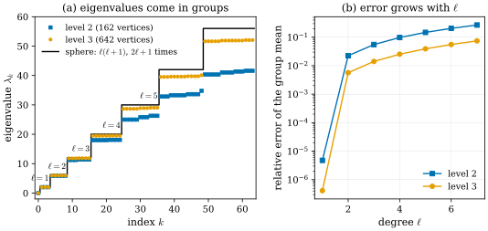
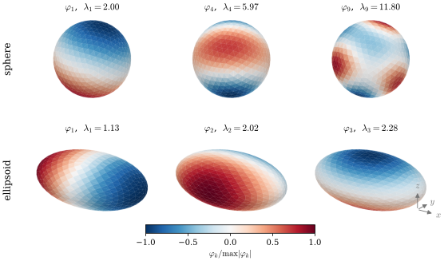
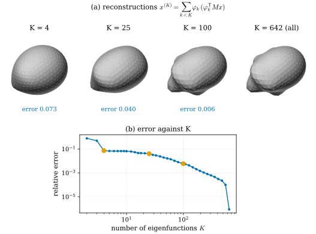
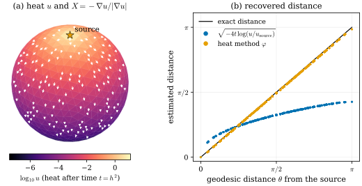
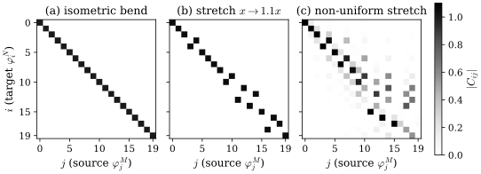

31.4 Spectral Geometry on Meshes
Goals
- generalized eigenproblem \(-L\varphi = \lambda M\varphi\)의 해를 mesh 위의 Fourier basis로 이해하고, eigenvalue를 “주파수”로 읽을 수 있다.
- sphere mesh의 spectrum이 \(\ell(\ell + 1)\)의 \(2\ell + 1\)중 묶음으로 나타나는 것을 수치로 확인하고, Section 29.6의 spherical harmonics와 연결할 수 있다.
- low-pass 재구성, heat kernel과 heat method, heat kernel signature가 spectrum에서 어떻게 나오는지 설명하고, heat method가 gradient를 정규화하는 이유를 말할 수 있다.
- functional map이 isometry에서 거의 대각이 되는 이유와 그 가정이 깨지는 경우를 수치 예로 설명할 수 있다.
Prerequisites
- Section 31.3: cotan Laplacian \(L\)과 mass matrix \(M\)(Definition 31.3.3), \(-L\)의 성질(Proposition 31.3.4)
- Section 29.6: spherical harmonics는 \(S^2\)의 Laplace–Beltrami operator의 eigenfunction이다(Proposition 29.6.1).
- Section 0.5: geodesic distance, mesh 위의 heat method(In computer vision 상자)
- linear algebra: symmetric matrix의 spectral theorem, orthogonal projection
Motivation
Section 31.3에서 mesh의 Laplacian을 행렬 \(L\)과 \(M\)으로 만들었다. 행렬이 있으면 다음에 할 일은 eigenvector를 구하는 것이다. 원 위에서는 \(d^2/d\vartheta^2\)의 eigenfunction \(\cos k\vartheta, \sin k\vartheta\)가 Fourier 급수를 주었고, sphere 위에서는 \(\Delta_{S^2}\)의 eigenfunction이 spherical harmonics였다(Section 29.6). 3DGS가 view-dependent color를 degree 3까지의 16개 함수로 저장한 것은 sphere의 Laplacian spectrum의 낮은 쪽만 쓴 것이었다.
임의의 surface에는 이런 닫힌 꼴의 basis가 없다. 그러나 mesh에서는 \(L\)과 \(M\)의 eigenvector를 그냥 계산하면 된다. 그 basis는 surface의 모양에 맞춰진 Fourier basis이고, 거기에서 smoothing, 압축, 거리 계산, shape descriptor, shape correspondence가 나온다. 이 절은 그 기초를 보인다.
The Generalized Eigenproblem
Definition 31.4.1 (manifold harmonics). mesh의 cotan Laplacian \(L\)과 mass matrix \(M\)에 대한 generalized eigenproblem
의 해 \(\varphi_k\)(vertex 값의 vector, 곧 piecewise-linear 함수)를 mesh의 Laplacian eigenfunction이라 한다. Vallet과 Lévy는 이것을 manifold harmonics라 부르고 mesh 위의 Fourier transform의 basis로 썼다 [Vallet08]. smooth surface의 \(\Delta\varphi = -\lambda\varphi\)에 해당한다.
부호에 주의한다. 이 study set의 \(L\)은 negative semidefinite이므로 \(-L\)을 쓴다. 코드에서 흔한 positive semidefinite 행렬 \(L_{\text{code}} = -L\)로 쓰면 \(L_{\text{code}}\varphi = \lambda M\varphi\)이다. 어느 쪽이든 \(\lambda \ge 0\)이다.
Proposition 31.4.2 (properties). 연결된 mesh에서 (31.4.1)은 \(n_0\)개의 실수 eigenvalue와 \(M\)-orthonormal basis \(\varphi_0, \dots, \varphi_{n_0 - 1}\)을 가진다. \(\lambda_0 = 0\)이고 \(\varphi_0\)은 상수다. 모든 vertex 함수 \(u\)는
로 전개되고, \(\lambda_k = \int\abs{\nabla\varphi_k}^2\,dA \big/ \varphi_k^{\mathsf T}M\varphi_k\)이다. 분모는 \(\int\varphi_k^2\,dA\)를 vertex마다의 넓이 몫으로 근사한 값이다.
Derivation. \(M\)은 양수 대각이므로 \(\psi = M^{1/2}\varphi\)로 바꾸면 (31.4.1)은 symmetric matrix \(M^{-1/2}(-L)M^{-1/2}\)의 보통 eigenproblem이 된다. spectral theorem에서 실수 eigenvalue와 orthonormal eigenvector \(\psi_k\)가 있고, \(\varphi_k = M^{-1/2}\psi_k\)는 \(M\)-orthonormal이다. \(-L\)이 positive semidefinite이고 kernel이 상수뿐이므로(Proposition 31.3.4) \(\lambda_0 = 0\)은 한 번만 나온다. 마지막 식은 \(\varphi_k^{\mathsf T}(-L)\varphi_k = \int\abs{\nabla\varphi_k}^2\)((31.3.2))와 \(\varphi_k^{\mathsf T}M\varphi_k = 1\)에서 나온다.
마지막 식이 eigenvalue의 뜻이다. \(\lambda_k\)는 함수의 “크기” \(\int\varphi^2\) 하나당 “흔들림” \(\int\abs{\nabla\varphi}^2\)이고, 원의 \(\cos k\vartheta\)에서 \(k^2\)에 해당한다. 그래서 \(\sqrt{\lambda_k}\)가 공간 주파수, \(2\pi/\sqrt{\lambda_k}\)가 대략의 파장이다. 작은 \(k\)는 surface 전체에 걸친 느린 변화, 큰 \(k\)는 짧은 파장의 진동이다.
Sphere Meshes: Spherical Harmonics Again
unit sphere에서 \(\Delta_{S^2}\)의 eigenvalue는 \(-\ell(\ell + 1)\)이고 각각 \(2\ell + 1\)중이었다(Proposition 29.6.1). icosphere에서 (31.4.1)을 풀면 이것이 다시 보인다.

Figure 31.4.1의 (a)에서 점들이 계단을 따라가는 모습이 spherical harmonics의 \(2\ell + 1\)중 퇴화다. (b)는 해상도의 한계를 보인다. 높은 \(\ell\)일수록 파장 \(2\pi/\sqrt{\ell(\ell + 1)}\)이 짧아져 edge 몇 개로 그 진동을 표현해야 하므로 오차가 커진다. level을 하나 올려 edge를 반으로 줄이면 같은 \(\ell\)의 오차가 약 1/4이 된다. 세세하게 보면 level 3에서 \(\ell = 3\)의 일곱 값은 11.803(3개)과 11.851(4개)로, \(\ell = 4\)의 아홉 값은 19.480(5개)과 19.509(4개)로 갈라진다. smooth sphere의 symmetry는 모든 회전이지만 icosphere의 symmetry는 정이십면체의 회전뿐이라, 그 symmetry가 지키지 못하는 퇴화가 풀린 것이다. 군 표현론으로 말하면 정이십면체 회전군 아래에서 \(\ell = 1, 2\)의 공간은 갈라지지 않고, \(\ell = 3\)은 \(3 + 4\)차원, \(\ell = 4\)는 \(4 + 5\)차원 조각으로 갈라진다. 위의 개수가 정확히 그렇다.

Figure 31.4.2의 윗줄은 Figure 29.6.1을 mesh로 다시 계산한 것이다. 한 가지가 다르다. 29.6의 표는 \(\mathcal H_\ell\)의 특정한 basis \(Y_{\ell m}\)이었지만, mesh에서 eigenvector 계산은 같은 eigenvalue의 묶음 안에서 아무 \(M\)-orthonormal basis나 돌려준다. 그래서 \(\varphi_1\)은 \(x, y, z\) 가운데 하나가 아니라 그 셋의 어떤 회전된 combination이다(실제로 \(x, y, z\)는 \(\varphi_1, \varphi_2, \varphi_3\)의 span에 상대 오차 \(10^{-4}\)로 들어 있다). 이 자유는 Section 29.6에서 회전이 degree마다 행렬 \(D^\ell(R)\)로 작용한 것과 같은 이야기다. 아랫줄의 ellipsoid처럼 symmetry가 깨진 surface에서는 eigenvalue가 갈라져 각 eigenfunction이 (부호를 빼고) 하나로 정해진다.
Low-Pass Filtering and Compression
vertex 위치 \(x\)의 각 좌표도 vertex 함수이므로 (31.4.2)로 전개할 수 있다. 처음 \(K\)개만 남긴
는 \(x\)를 앞의 \(K\)개 eigenfunction이 펼치는 공간으로 \(M\)-orthogonal projection한 것이고, 그 공간 안에서 \(\int\abs{x - x^{(K)}}^2\,dA\)가 가장 작은 근사다. Fourier 급수를 자르는 것과 같은 low-pass filter이고, 주파수마다 coefficient에 가중치를 곱하면 일반적인 spectral filter가 된다 [Vallet08].

Figure 31.4.3의 (a)를 왼쪽부터 보자. 처음 몇 개의 eigenfunction은 전체 크기와 방향을 담는다. \(\varphi_0\)은 상수라서 \(x^{(1)}\)은 무게중심이고, \(\varphi_1, \varphi_2, \varphi_3\)이 더해지면 shape가 세 축으로 늘어난 달걀이 된다(unit sphere라면 \(x^{(4)}\)가 곧 sphere다, Exercise 31.4.3). 혹은 폭이 0.22 정도의 짧은 구조라 그 파장에 맞는 수십 번째 이후의 eigenfunction이 들어와야 나타난다. (b)의 곡선은 압축으로 읽을 수 있다. vertex 642개의 좌표 1926개 대신 coefficient \(3K\)개를 저장하면 \(K = 100\)에서 오차가 0.6%다. 다만 basis \(\varphi_k\) 자체가 shape에 따라 정해지므로, 그것을 따로 저장하거나 같은 연결의 다른 shape와 공유할 수 있을 때 압축이 의미가 있다.
Heat Kernel, Heat Method, and Heat Kernel Signature
heat equation \(\partial_t u = \Delta u\)의 해는 spectrum으로 바로 쓸 수 있다. 이산판 \(M\dot u = Lu\)에 (31.4.2)를 넣으면 각 성분이 \(\dot{\hat u}_k = -\lambda_k\hat u_k\)로 따로 놀므로
이다. \(k_t\)를 heat kernel(열핵)이라 한다. 점 \(j\)에 단위 열을 놓으면 시간 \(t\) 뒤 \(i\)에 \(k_t(i, j)\)가 도착한다. 높은 주파수는 \(e^{-\lambda_k t}\)로 빨리 사라지므로, heat flow는 시간이 갈수록 강해지는 low-pass filter다.
heat kernel은 거리를 안다. Varadhan의 공식은 smooth surface에서 \(d(x, y) = \lim_{t \to 0}\sqrt{-4t\log k_t(x, y)}\)라고 말한다 [Crane13]. 평면에서 \(k_t = (4\pi t)^{-1}e^{-d^2/(4t)}\)이므로 이것은 놀랍지 않다. 그러나 이 공식을 mesh에서 그대로 쓰면 결과가 나쁘다. 근사한 \(k_t\)의 크기 오차가 \(\log\)를 거쳐 증폭되기 때문이다. heat method는 크기를 버리고 방향만 쓴다 [Crane13].
- 출발점에 열을 놓고 backward Euler 한 step \((M - tL)u = \delta\)를 푼다. 논문은 \(t = h^2\)(\(h\)는 평균 edge 길이)을 권한다.
- face마다 \(X = -\nabla u/\abs{\nabla u}\)를 만든다.
- \(\nabla\varphi\)가 \(X\)에 가장 가까운 \(\varphi\), 곧 Poisson equation \(\Delta\varphi = \divg X\)의 해를 구하고 출발점에서 0이 되게 상수를 더한다.
왜 방향은 믿을 수 있는가? 짧은 시간의 열은 \(u \approx c\,e^{-d^2/(4t)}\) 꼴이므로 \(\nabla u \approx -\tfrac{d}{2t}\,u\,\nabla d\)이다. 앞의 수 \(\tfrac{d}{2t}u\)는 크기만 바꾸고 방향은 언제나 \(-\nabla d\)다. 크기가 몇 자릿수씩 틀려도 정규화하면 사라지고, 남는 것은 \(\abs{\nabla d} = 1\)(eikonal equation)인 거리의 방향이다(Exercise 31.4.5).

Figure 31.4.4의 (a)에서 색이 열의 크기, 화살표가 방향이다. 크기는 출발점 근처의 밝은 노랑에서 반대편의 검정까지 \(10^8\)배 넘게 변하지만, 방향은 모든 곳에서 meridian에 가깝다. 정확한 meridian 방향과의 차이는 face 평균 \(5^\circ\), 최대 \(14^\circ\)이고, 이 차이는 거리가 멀어져도 커지지 않는다(출발점 근처의 face에서 가장 크다). \(X\)가 face마다 piecewise-linear 함수의 gradient라서 생기는 작은 흔들림이고, 3단계의 Poisson equation이 그것을 평균한다. (b)의 파란 점은 크기를 믿은 결과이고, 주황 점은 방향만 믿은 결과다. 한 step의 backward Euler는 진짜 heat kernel이 아니어서 크기의 감소율이 \(e^{-d^2/(4t)}\)와 다르지만, 방향은 그 차이에 영향을 받지 않는다. \(t\)를 \(h^2/4\)나 \(4h^2\)로 바꾸면 평균 오차는 0.034와 0.017이 된다. \(t\)를 키우면 거리가 조금 매끄러워진다. 두 linear system의 행렬은 출발점과 무관하므로 한 번 분해해 두면 출발점을 바꿀 때마다 빠르게 다시 풀 수 있다는 것이 이 방법의 실용적인 장점이다 [Crane13].
heat kernel을 대각선에서만 본 것이 heat kernel signature(HKS)다 [Sun09]:
점 \(x\)에 놓은 열이 시간 \(t\) 뒤에 얼마나 제자리에 남는가를 \(t\)의 함수로 본 것이다. 성질은 셋이다.
- isometry 불변: Laplacian은 metric만으로 정해지므로 isometry \(T\)에 대해 \(k_t^N(T(x), T(y)) = k_t^M(x, y)\)이고, 따라서 HKS도 같다. 같은 연결로 평면 판을 휘어(isometry) 만든 mesh에서 HKS(\(t = 0.05\), eigenpair 60개)는 \(2 \times 10^{-4}\)만큼만 변하고, 가로로 1.1배 늘인 mesh에서는 약 5% 변한다.
- 작은 \(t\)에서 curvature: \(k_t(x, x) = \tfrac{1}{4\pi t}\big(1 + \tfrac13 K(x)\,t + O(t^2)\big)\)이다(논문은 scalar curvature \(s\)로 \(a_1 = s/6\)이라 쓰고 괄호 안에서 \(s\)를 surface의 Gaussian curvature라고 부르지만, surface의 scalar curvature는 \(s = 2K\)이다. 아래 sphere의 수치가 \(K/3\)을 확인한다). unit sphere에서 정확한 급수 \(\sum_\ell\tfrac{2\ell + 1}{4\pi}e^{-\ell(\ell + 1)t}\)로 확인하면 \(4\pi t\,k_t = 1.0034\)(\(t = 0.01\)), \(1 + t/3 = 1.0033\)이다. 작은 \(t\)의 HKS는 국소 기하, 큰 \(t\)는 전체 모양을 본다.
- 정보량: 두 compact manifold의 eigenvalue가 반복되지 않으면, homeomorphism \(T\)가 isometry인 것과 모든 \(x, t\)에서 HKS가 같은 것이 동치다(논문의 Informative Theorem). 반복되는 eigenvalue가 있는 symmetric shape에서는 이 정리를 쓸 수 없다.
mesh에서 HKS를 쓸 때는 \(t\)가 \(h^2\)보다 충분히 커야 한다. unit icosphere(level 3)에서 \(t = 0.1\)이면 mesh의 HKS가 정확한 값과 4% 안에서 맞지만, \(t = 0.01 \lt h^2\)이면 mesh의 값이 11.72, 정확한 값이 7.98로 크게 틀린다. 짧은 시간의 열은 mesh가 표현하지 못하는 높은 주파수에 의존하기 때문이다.
Functional Maps
두 shape \(M, N\) 사이의 대응 \(T\colon M \to N\)을 점의 대응 대신 함수의 대응으로 보면, \(T\)는 함수 \(f\)를 \(T_F(f) = f \circ T^{-1}\)로 보내는 linear map이 된다. 두 shape의 eigenbasis로 쓰면 이것은 행렬
이다. 이것이 functional map이다 [Ovsjanikov12]. 낮은 주파수 \(k\)개만 쓰면 수만 개 점의 대응이 \(k \times k\) 행렬 하나로 압축된다. 논문이 강조하는 사실은 다음과 같다. \(T\)가 isometry이면 \(T_F\)는 Laplace–Beltrami operator와 교환하므로 \(C_{ij}\)는 \(\varphi_j^M\)과 \(\varphi_i^N\)의 eigenvalue가 같을 때만 0이 아니고, eigenvalue가 반복되지 않으면 \(C\)는 대각이다. isometry는 넓이도 보존하므로 그 대각 성분은 \(\pm1\)이고, 부호는 eigenfunction의 부호를 어떻게 골랐는지에 달려 있다. 거의 isometry이면 \(C\)는 대각 근처에 몰린(funnel 모양의) sparse matrix가 되지만, 가벼운 non-isometric 변형에도 금방 대각을 벗어나고 높은 주파수에서 특히 그렇다. 넓이를 보존하는 대응이면 \(C\)는 orthonormal이다. 실제로 \(C\)를 모를 때는 descriptor(HKS 같은 점 함수)가 보존된다는 조건 \(Ca = b\)와 Laplacian과의 교환 조건을 linear constraint로 모아 least squares로 푼다.

Figure 31.4.5를 왼쪽부터 보자. (a)의 판은 3D에서는 물결 모양으로 크게 휘었지만 surface 안에서 잰 길이는 거의 그대로다. Laplacian은 그 길이만 보므로 eigenfunction이 하나하나 그대로 옮겨 가고 \(C\)는 identity matrix다. (b)는 판을 겨우 10% 늘였을 뿐인데 대각 가정이 깨진다. 다만 각 eigenfunction은 여전히 정확히 하나의 짝을 가진다. 순서만 바뀌었다. (c)처럼 늘이는 정도가 곳에 따라 다르면 eigenfunction 자체의 모양이 바뀌어 짝이 여럿에 퍼진다. 이것이 functional map이 near-isometric matching(같은 사람의 다른 자세, 같은 동물의 다른 포즈)에서 강하고, 크게 다른 shape 사이에서는 추가 제약이 필요한 이유다. 3D vision의 non-rigid shape correspondence와 descriptor 학습은 이 표현 위에서 발전했다. 이 절의 목적은 그 출발점의 기하를 보이는 것이고, 그 방법들의 성능을 평가하는 것은 아니다.
Summary
- \(-L\varphi = \lambda M\varphi\)의 \(M\)-orthonormal eigenfunction은 mesh 위의 Fourier basis(manifold harmonics)이고, \(\lambda_k = \int\abs{\nabla\varphi_k}^2/\int\varphi_k^2\)은 주파수의 제곱이다.
- sphere mesh에서 eigenvalue는 \(\ell(\ell + 1)\)의 \(2\ell + 1\)중 묶음으로 나타나고 Section 29.6의 spherical harmonics를 재현한다. 높은 \(\ell\)일수록 해상도 때문에 작게 나온다.
- 처음 \(K\)개로의 projection은 low-pass filter이고 압축이다. heat flow는 \(e^{-\lambda t}\)로 높은 주파수를 지운다.
- heat method는 짧은 시간의 열의 gradient 방향만 써서 geodesic distance를 얻는다. 크기는 몇 자릿수 틀려도 방향은 거리의 방향이다. HKS는 isometry 불변인 점 descriptor이고, 작은 \(t\)에서 \(K\)를 담는다.
- functional map은 대응을 eigenbasis의 작은 행렬로 쓴다. isometry이고 eigenvalue가 단순하면 대각이지만, symmetry와 non-isometric 변형에서 그 가정은 쉽게 깨진다.
다음 절에서는 mesh가 어디서 오는지를 본다. SDF·TSDF의 level set에서 marching cubes로, oriented point에서 Poisson equation으로 mesh를 만들고, 반대로 mesh face에 Gaussian을 묶는다. 이 절과 앞 절의 Laplacian이 Poisson reconstruction의 한가운데에 있다.
Quick check
Exercise 31.4.1 ★ unit sphere에서 eigenvalue가 13보다 작은 Laplacian eigenfunction은 몇 개인가? 이것은 3DGS의 색 표현과 어떤 관계인가? level 3 icosphere에서는 몇 개인가?
Solution
\(\ell(\ell + 1) \lt 13\)이면 \(\ell \le 3\)이므로 \(1 + 3 + 5 + 7 = 16\)개다. 3DGS가 채널마다 쓰는 degree 3까지의 spherical harmonics 16개가 정확히 이것이다(Section 29.6). level 3 icosphere에서도 eigenvalue가 13보다 작은 것은 16개다(\(\ell = 3\)의 값이 11.80–11.85, \(\ell = 4\)는 19.49 근처).
Verification: verify/v-31-4-spectral-geometry.py
Exercise 31.4.2 ★ mesh 전체를 \(s\)배 키우면 \(\lambda_k\), \(M\)-normalized \(\varphi_k\), HKS는 어떻게 변하는가? HKS는 scale에 불변인 descriptor인가?
Solution
cotan 가중치는 각만 보므로 \(L\)은 그대로이고 넓이는 \(s^2\)배이므로 \(M \to s^2M\)이다. 따라서 \(\lambda_k \to \lambda_k/s^2\), \(\varphi_k \to \varphi_k/s\)(정규화 \(\varphi^{\mathsf T}M\varphi = 1\)을 지키려고)이다. HKS는 \(\sum_k e^{-\lambda_k t/s^2}\varphi_k^2/s^2\), 곧 \(\operatorname{HKS}_{sM}(x, t) = s^{-2}\operatorname{HKS}_M(x, t/s^2)\)이다. scale에 불변이 아니다. 시간 축이 \(s^2\)배 늘어나고 값이 \(s^{-2}\)배가 된다. isometry 불변과 scale 불변은 다른 성질이다.
Verification: verify/v-31-4-spectral-geometry.py
Exercise 31.4.3 ★ unit icosphere에서 (31.4.3)의 \(x^{(4)}\)는 \(x\)와 거의 같다. 이유를 설명하여라. Figure 31.4.3의 덩어리에서는 왜 \(x^{(4)}\)가 원래 shape와 다른가?
Solution
smooth sphere에서 좌표 함수 \(x, y, z\)는 \(\ell = 1\)의 eigenfunction이다(Proposition 29.6.1). mesh에서도 \(x, y, z\)는 \(\varphi_1, \varphi_2, \varphi_3\)의 span에 상대 오차 \(10^{-4}\) 정도로 들어 있고, 상수 성분(원점)은 \(\varphi_0\)이 담는다. 그래서 처음 네 개로 위치가 거의 정확히 재현된다(상대 오차 \(1.1 \times 10^{-4}\)). 덩어리의 좌표 함수는 그 shape의 eigenfunction이 아니라 여러 주파수의 합이므로 처음 네 개는 전체적인 크기와 방향(달걀 모양)만 잡는다.
Verification: verify/v-31-4-spectral-geometry.py
Exercise 31.4.4 ★★ Figure 31.4.5의 실험을 정사각형 판 \([0, 1]^2\)으로 하면, isometric bend에서도 \(C\)가 대각이 아닐 수 있다. 이유를 설명하고, 그때 \(C\)가 어떤 모양이어야 하는지 말하여라.
Solution
정사각형의 Neumann eigenvalue \(\pi^2(m^2 + n^2)\)는 \((m, n) = (1, 0)\)과 \((0, 1)\)에서 같은 \(\pi^2\)이다. 반복되는 eigenvalue의 eigenspace는 2차원이고, eigenvector 계산은 그 안의 아무 orthonormal pair나 돌려준다. source와 target에서 고른 pair가 다르면 isometry라도 그 묶음에서 \(C\)는 \(2 \times 2\) orthogonal block(회전 또는 반사)이 된다. 일반적으로 isometry의 \(C\)는 같은 eigenvalue끼리의 block diagonal이다 [Ovsjanikov12]. (실제 mesh에서는 삼각형 분할 때문에 두 값이 조금 갈라질 수 있고, 그러면 순서가 뒤바뀐 대각에 가까운 모양도 나온다.)
Verification: verify/v-31-4-spectral-geometry.py
Exercise 31.4.5 ★★ 열이 \(u = c\,e^{-d^2/(4t)}\) 꼴(\(c \gt 0\)는 \(x\)에 천천히 의존해도 된다고 하자. 여기서는 상수로 둔다)이면 \(-\nabla u/\abs{\nabla u} = \nabla d\)임을 보여라(\(\abs{\nabla d} = 1\)). 그런데 \(\sqrt{-4t\log(u/c)}\)로 거리를 구하려면 무엇을 정확히 알아야 하는가?
Solution
\(\nabla u = c\,e^{-d^2/(4t)}\cdot\big(-\tfrac{d}{2t}\big)\nabla d = -\tfrac{d}{2t}\,u\,\nabla d\)이고 \(\tfrac{d}{2t}u \gt 0\)이므로 \(-\nabla u/\abs{\nabla u} = \nabla d/\abs{\nabla d} = \nabla d\)이다. 앞의 양수 인자가 얼마이든 방향은 같다. 반면 \(\sqrt{-4t\log(u/c)}\)는 \(u\)의 크기와 상수 \(c\)를 정확히 알아야 하고, \(u\)가 \(e^{-d^2/(4t)}\)의 감소율을 정확히 따라야 한다. 한 step backward Euler의 \(u\)는 감소율이 다르므로 Figure 31.4.4(b)의 파란 점처럼 멀리서 크게 틀린다.
Verification: verify/v-31-4-spectral-geometry.py